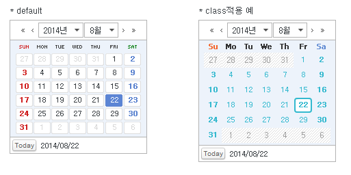

9.Calendar
수정 일자 버전 (SP2)
WebSquare5 Studio : 20180117_1349_x86_B
WebSquare5 Engine : 5.0_2.2982B.20180223.154326_1.5
InputCalendar는 달력 컴포넌트와 Input 컴포넌트를 그룹화시킨 복합 컴포넌트로서, 달력에서 선택한 날짜가 Input 컴포넌트에 출력 됩니다.
달력 이미지를 출력하여 날짜를 선택할 수 있는 인터페이스를 제공하는 컴포넌트로 5가지의 디자인을 제공하고 있습니다.
달력의 종류는 3가지로, 년월, 년월일, 년월일시간을 나타낼 수 있습니다.
InputBox와 관련된 것을 제외하고 InputCalendar와 동일한 속성을 가지고 있습니다. 단, 직접적인 날짜 입력은 불가능합니다.
날짜 선택 시, 발생하는 이벤트 ondateselect(dateStr, dateObj)에서 선택된 날짜로 액션을 취할 수 있습니다.
9.1Property
Property | Description |
|---|---|
| 웹스퀘어에서 제공하는 5가지 skin 제공[default:class1, class2, class3, class4, class5] 스킨 종류를 정의합니다. |
calendarValueType | 캘린더의 뷰타입 설정가능, 예:) 년,월,일 > 년,월[default:yearMonthDate, yearMonth, yearMonthDateHour, yearMonthDateTime, yearMonthDateTimeSec] calendar의 표현 방법을 정의합니다. |
cancelButtonShow | [default:false, true]X(취소)모양의 버튼 표시 여부 컴포넌트의 우측 하단에 표현됩니다. 해당 버튼이 click 되었을 때의 로직은 oncancel이벤트에서 구현합니다. |
caption | HTML caption Tag의 값을 설정합니다.(본 컴포넌트는 table Tag를 이용하여 구성되어 있습니다) |
delimiter | [default:/]컴포넌트 하단에 나오는 선택 된 년월일 값에 대한 구분자를 설정합니다. |
displayHrMinSec | [default:false, true] calendarValueType="yearMonthDateTime" 설정 시 selectbox에 시,분.초를 표시하는 기능 |
footerDiv | [default:false, true]선택 된 날짜등이 있는 컴포넌트 하위 영역을 table Tag가 아닌 div Tag로 표현할지 여부 |
id | 컴포넌트의 ID로 전역객체로 할당되며 script에서 본 id로 컴포넌트에 접근이 가능합니다. |
maxYear | calendar에 표시되는 최대연도로 config.xml의 calendar하위의 maxYear의 value 속성값이 기본값으로 설정됩니다. ex)<calendar><minYear value="1978" /><maxYear value="2030" /></calendar> |
minYear | calendar에 표시되는 최소연도로 config.xml의 calendar하위의 minYear의 value 속성값이 기본값으로 설정됩니다. ex)<calendar><minYear value="1978" /><maxYear value="2030" /></calendar> |
monthNames | 월에 해당하는 selectbox에 display값을 설정하는 기능으로 1월부터 12월의 display값을 ,(comma)로 구분하여 정의합니다. ex) Jan,Feb,Mar,Apr,May,Jun,Jul,Aug,Sep,Oct,Nov,Dec |
ref | DataCollection의 value 경로로 컴포넌트와 DataCollection의 value를 binding을 시킬 때 사용하며 "data:"라는 prefix는 필수로 붙여주어야 합니다. 작성 방법은 data:[DataCollection ID].[Key id 또는 Column id]와 같습니다. 예시)data:dataMap1.name DataList와 연동 된 경우는 GridView에서 선택 된 Row의 값이 binding 됩니다. Instance Data와 연동 할 경우 연동 할 XML 데이터의 XPath를 명시합니다. 예시)res/userInfo/name/@value |
| (native) 접근성관련 프로젝트 시 이용[default:component, native]컴포넌트의 레이아웃 구조를 설정합니다. component : 내부적으로 div 및 table을 이용하여 달력을 표현합니다. 웹 접근성을 위해서는 사용을 지양해야 합니다. native : 주로 웹 접근성을 위해 사용되는 속성으로 달력 내부의 selectbox를 html의 select태그를 사용하여 렌더링하며, 달력의 숫자 및 버튼들을 html의 button태그로 렌더링합니다. |
| Calendar의 style 속성 |
summary | HTML의 table Tag의 summary 속성과 동일한 기능을 제공한다. 일반적으로 웹접근성 화면 구현시 사용됩니다. |
tabIndex SP2 | Tab Key를 이용 한 컴포넌트의 포커스 순서로 HTML의 tabindex속성과 동일한 기능을 제공한다. |
title | HTML의 title속성과 동일한 기능으로 명시 된 값을 브라우저에서 마우스 over시 툴팁형태로 표현합니다. |
toolTip | 웹스퀘어에서 만든 toolTip으로 컴포넌트의 추가정보를 명시한다. 마우스 over시 표현됩니다. |
useMonthSelect | [default:true, false]기본 달력 타입(calendarValueType속성의 값이 yearMonthDate)일 때만 적용되며 월(month) selectbox의 disabeld 적용 여부. 실제 내부적으로는 disabled 속성을 이용하지는 않으며 사용자가 selectbox를 click 했을 때 항목이 열리지 않도록 합니다. |
useYearSelect | [default:true, false]기본 달력 타입(calendarValueType속성의 값이 yearMonthDate)일 때만 적용되며 년도(year) selectbox의 disabeld 적용 여부. 실제 내부적으로는 disabled 속성을 이용하지는 않으며 사용자가 selectbox를 click 했을 때 항목이 열리지 않도록 합니다. |
visibleHourList SP2 | [default:1,2,...,23,24] 시간이 표시되는 달력에서 시간 항목을 설정하는 속성. [,]를 구분자로 사용한다. (ex) calendarValueType="yearMonthDateTime", visibleHourList="5,10,15,20" 인 경우, 시간 목록 선택 시 [5,10,15,20] 목록만 나타난다. (ex) https://inswave.com/jira/browse/SKT-691 참조 |
visibleMinList SP2 | [default:1,2,...,59,60] 분이 표시되는 달력에서 분 항목을 설정하는 속성. [,]를 구분자로 사용한다. (ex) calendarValueType="yearMonthDateTime", visibleMinList="0,5,10,15,20,25,30,35,40,45,50,55" 인 경우, 분 목록 선택 시 5의 배수 목록만 나타난다. (ex) https://inswave.com/jira/browse/SKT-691 참조 |
visibleSecList SP2 | [default:1,2,...,59,60] 초가 표시되는 달력에서 초 항목을 설정하는 속성. [,]를 구분자로 사용한다. (ex) calendarValueType="yearMonthDateTime", visibleSecList="0,5,10,15,20,25,30,35,40,45,50,55" 인 경우, 초 목록 선택 시 5의 배수 목록만 나타난다. (ex) https://inswave.com/jira/browse/SKT-691 참조 |
weekStartsOn | [default:0, 1, 2, 3, 4, 5, 6]시작 요일을 설정합니다(0:일, 1:월, 2:화, 3:수, 4:목, 5:금, 6:토) |
yearSuffix | 연도 selectbox의 display되는 값의 숫자(연도) 뒤에 들어갈 문자열. 연도만 display 시킬 때는 $blank로 정의합니다. |
9.2브라우저 캡쳐화면
[ property : calendarClass ]
[그림 9-1]1
<w2:calendar calendarClass="class5" footerDiv="false" id="calendar5" style="position: relative;width: 100px;height: 100px;left:366px;top:-400px;" weekStartsOn="1"> </w2:calendar>[ property : calendarValueType ]
yearMonthDate

[그림 9-2]2
<w2:calendar footerDiv="false" weekStartsOn="1" id="calendar1" style="position: relative;width: 100px;height: 100px;left:93px;top:262px;" calendarClass="class1" calendarValueType="yearMonthDate"> </w2:calendar>yearMonth
[그림 9-3]3
<w2:calendar footerDiv="false" weekStartsOn="1" id="calendar1" style="position: relative;width: 100px;height: 100px;left:93px;top:262px;" calendarClass="class1" calendarValueType="yearMonth"> </w2:calendar>yearMonthDateTime
[그림 9-4]4
<w2:calendar footerDiv="false" weekStartsOn="1" id="calendar1" style="position: relative;width: 100px;height: 100px;left:93px;top:262px;" calendarClass="class1" calendarValueType="yearMonthDateTime"> </w2:calendar>[ property : maxYear / minYear ]
<w2:calendar footerDiv="false" weekStartsOn="0" id="calendar1" style="position: relative;width: 100px;height: 100px;" maxYear="1985" minYear="2085"> </w2:calendar>[ property : yearStartsOn ]
0: 일요일
1: 월요일
2: 화요일
3: 수요일
4: 목요일
5: 금요일
6: 토요일
[그림 9-5]5
<w2:calendar footerDiv="false" weekStartsOn="4" id="calendar1"style="position: relative;width: 100px;height: 100px;left:93px;top:262px;" calendarClass="class1" calendarValueType="yearMonthDate"> </w2:calendar>
9.3class 적용과 스타일 변경

참고사항:
.customClass.w2inputCalendar_input {width:99%;}
프로퍼티 중 calendarClass는 팝업으로 뜨는 캘린더에 대한 class 입니다.
프로퍼티에서 ‘customClass’를 입력했을 경우, DOM 상에서는 클래스가 .w2calendar_customClass로 들어가기에
해당 css 파일에서는 클래스명을.w2calendar_customClass로 선언하여 수정해야 합니다.
ex) class 프로퍼티에 입력한 클래스가 ‘customClass’ 일 경우 해당 css 파일에서,
.w2calendar_customClass .w2calendar_content {width:99%;}
팝업으로 뜨는 캘린더 내부의 디자인 수정을 하려면 위와 같은 작업을 각각 클래스에 대해 해야 하므로, 퍼블리싱 공수가 많이 들어갑니다.
class를 이용해서 캘린더의 이미지를 변경시킬수있습니다.
아래는 xin이라는 class를 적용시킨 예시입니다.(calendarClass에는 적용한 class앞에 w2calendar_가 붙습니다.)
.w2calendar_xin{border:2pxsolid#d1d0ca;height:210px;width:199px;} .w2calendar_xin .w2calendar_content{height:156px;} .w2calendar_xin .w2calendar_wrap{border:0;height:210px} .w2calendar_xin .w2calendar_header, .w2calendar_xin .w2calendar_content_table{width:199px} .w2calendar_xin .w2calendar_selectbox_year{width:60px} .w2calendar_xin .w2calendar_content{border-bottom:1pxsolid#a9a9a9} .w2calendar_xin .w2calendar_header .w2calendar_header_last_year{ background:url(/DesignGuide/images/calendar/year_last.gif)no-repeat} .w2calendar_xin .w2calendar_header .w2calendar_header_last_month{ background:url(/DesignGuide/images/calendar/month_last.gif)no-repeat} .w2calendar_xin .w2calendar_header .w2calendar_header_next_month{ background:url(/DesignGuide/images/calendar/month_next.gif)no-repeat} .w2calendar_xin .w2calendar_header .w2calendar_header_next_year{ background:url(/DesignGuide/images/calendar/year_next.gif)no-repeat} .w2calendar_xin .w2calendar_col_day, .w2calendar_xin .w2calendar_col_date{height:22px} .w2calendar_xin .w2calendar_day0{ background:url(/DesignGuide/images/calendar/day_sun.gif)no-repeat100%0} .w2calendar_xin .w2calendar_day1{ background:url(/DesignGuide/images/calendar/day_mon.gif)no-repeat100%0} .w2calendar_xin .w2calendar_day2{ background:url(/DesignGuide/images/calendar/day_tue.gif)no-repeat100%0} .w2calendar_xin .w2calendar_day3{ background:url(/DesignGuide/images/calendar/day_wed.gif)no-repeat100%0} .w2calendar_xin .w2calendar_day4{ background:url(/DesignGuide/images/calendar/day_thu.gif)no-repeat100%0} .w2calendar_xin .w2calendar_day5{ background:url(/DesignGuide/images/calendar/day_fri.gif)no-repeat100%0} .w2calendar_xin .w2calendar_day6{ background:url(/DesignGuide/images/calendar/day_sat.gif)no-repeat100%0} .w2calendar_xin .w2calendar_col_date{background:#fff} .w2calendar_xin .w2calendar_selected, .w2calendar_xin .w2calendar_date_over, .w2calendar_xin .w2calendar_date_over button{ color:#fff; background:url(/DesignGuide/images/calendar/bg_w2calendar_selected.gif)no-repeat } .w2calendar_xin .w2calendar_go_today, .w2calendar_xin .w2calendar_go_today_over{ width:39px; height:18px; background:url(/DesignGuide/images/calendar/b_date.gif)no-repeat } .w2calendar_xin .w2calendar_date_off, .w2calendar_xin .w2calendar_date_off button{color:#9A9595;text-align:center;} .w2calendar_xin .w2calendar_day_6, .w2calendar_xin .w2calendar_day_6 button{color:#488EFF;font-weight:bold;} .w2calendar_xin .w2calendar_day_0, .w2calendar_xin .w2calendar_day_0 button{color:#FF489C;font-weight:bold;} .w2calendar_xin .w2calendar_footer_date{padding-left:10px;color:#666} .w2calendar_xin .w2calendar_footer{margin:1px005px;}
9.4웹 접근성 가이드
달력을 보여주고 날짜를 선택하는 기능을 제공하는 컴포넌트이며, 접근성 지원을 위해선 renderType 속성을 native로 설정하고, 달력의 의미에 맞는 명확한 title 속성을 기술합니다.
사용시 Checkpoint
renderType 속성을 ”native”로 설정하였는가?
title 속성을 내용에 맞게 기술하였는가?
포커스될 때 테두리가 명확하게 나타나는가?
<w2:calendar id="calendar2" style="left: 16px;top: 278px;" renderType=”native” title="출발일자 선택">; <;/w2:calendar>;
9.5CSS Overriding
calendar 컴포넌트를 designView에 그리고 property 의 Class 에 사용자 정의 class를 정의한 다음 Preview 합니다.
[그림 9-6]6
No | Class | Description |
|---|---|---|
1 | w2calendar, w2calendar_class1, cal_type | w2calendar는 웹스퀘어 엔진에서 정의된 클래스입니다, 기본적으로 html 로 떨구는 시점에서 자동으로 부여됩니다.w2calendar_class1 는 calendarClass 의 속성값 지정시 웹스퀘어 엔진에서 부여되는 클래스입니다.cal_type 는 사용자 정의 클래스 입니다. 해당 클래스를 이용하여 디자인을 바꿀 수 있습니다. |
2 | w2calendar_class1 | w2calendar_class1 는 calendarClass 의 속성값 지정시 캘린더의 스킨 변경이 가능합니다. |
3 | cal_type | 사용자 정의 클래스로 Stylesheet_ext.css 다음에 적용됩니다. 동일한 스타일 시트를 정의함으로써 overriding(덮어쓰기) 됩니다. |
9.6주의사항 및 Tip
접근성 지원을 위해선 renderType 속성을 native로 설정하고, 달력의 의미에 맞는 명확한 title 속성을 기술합니다.
사용시 Checkpoint
renderType 속성을 ”native”로 설정하였는가?
title 속성을 내용에 맞게 기술하였는가?
포커스될 때 테두리가 명확하게 나타나는가?